This function create a Rmarkdown script and render it as a HTML document.
The HTML document is a quality-control report using all the metrics from visualise
based on recommendations from NanoString.
This function allows to print text and figures from the results of a call to summarise()
or normalise().
It is intended to be used in a Rmarkdown chunk.
render(nacho_object, colour = "CartridgeID", output_file = "NACHO_QC.html", output_dir = getwd(), size = 0.5, show_legend = TRUE, keep_rmd = FALSE) print_nacho(nacho_object, colour = "CartridgeID", size = 0.5, show_legend = FALSE)
Arguments
| nacho_object | |
|---|---|
| colour | [character] Character string of the column in |
| output_file | [character] The name of the output file.
If using |
| output_dir | [character] The output directory for the rendered output_file.
This allows for a choice of an alternate directory to which the output file should be written
(the default output directory is the working directory, i.e., |
| size | [numeric] A |
| show_legend | [logical] Boolean to indicate whether the plot legends should
be plotted ( |
| keep_rmd | [logical] Boolean to indicate whether the Rmd file used to produce the HTML report
is copied to the directory provided in |
Examples
#> Warning: Transformation introduced infinite values in continuous y-axis#> Error: pandoc document conversion failed with error 1#> #> #> # RCC Summary #> #> - Samples: 20 #> - Endogenous: 50 #> - Housekeeping: 8 #> - Negative: 8 #> - Positive: 6 #> #> #> # Settings #> #> - Predict housekeeping genes: FALSE #> - Normalise using housekeeping genes: TRUE #> - Housekeeping genes available: MRPL19, PSMC4, SF3A1, RPLP0, PUM1, ACTB, TFRC and GUSB #> - Normalise using: GLM #> - Principal components to compute: 10 #> - Remove outliers: FALSE #> #> + Binding Density (BD) < 0.1 #> + Binding Density (BD) > 2.25 #> + Imaging (FoV) < 75 #> + Positive Control Linearity (PC) < 0.95 #> + Limit of Detection (LoD) < 2 #> + Positive normalisation factor (Positive_factor) < 0.25 #> + Positive normalisation factor (Positive_factor) > 4 #> + Housekeeping normalisation factor (house_factor) < 0.091 #> + Housekeeping normalisation factor (house_factor) > 11 #> #> #> # QC Metrics #> #> #> #> ## Binding Density #> #> The imaging unit only counts the codes that are unambiguously distinguishable. #> It simply will not count codes that overlap within an image. #> This provides increased confidence that the molecular counts you receive are from truly recognisable codes. #> Under most conditions, forgoing the few barcodes that do overlap will not impact your data. #> Too many overlapping codes in the image, however, will create a condition called image saturation in which significant data loss could occur (critical data loss from saturation is uncommon). #> #> #> To determine the level of image saturation, the nCounter instrument calculates the number of optical features per square micron for each lane as it processes the images. #> This is called the **Binding Density**. #> The **Binding Density** is useful for determining whether data collection has been compromised due to image saturation. #> The acceptable range for **Binding Density** is: #> #> #> * `0.1 - 2.25` for **MAX**/**FLEX** instruments #> * `0.1 - 1.8` for **SPRINT** instruments #> #> #> Within these ranges, relatively few reporters on the slide surface will overlap, enabling the instrument to accurately tabulate counts for each reporter species. #> A **Binding Density** significantly greater than the upper limit in either range is indicative of overlapping reporters on the slide surface. #> The counts observed in lanes with a **Binding Density** at this level may have had significant numbers of codes ignored, which could potentially affect quantification and linearity of the assay. #> Some of the factors that may contribute to increased **Binding Density** are listed in the Factors affecting **Binding Density** box.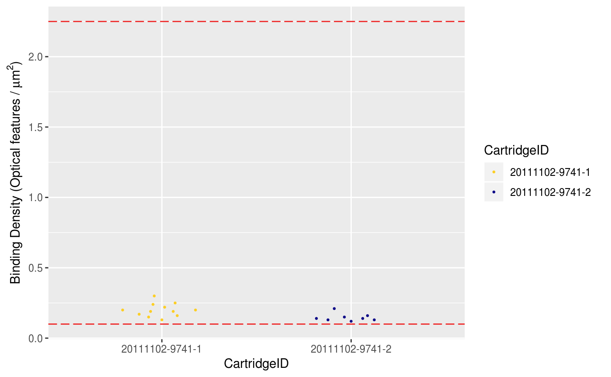#> #> #> #> ## Field of View (Imaging) #> #> Each individual lane scanned on an nCounter system is divided into a few hundred imaging sections, called Fields of View (**FOV**), the exact number of which will depend on the system being used (*i.e.*, **MAX/FLEX** or **SPRINT**), and the scanner settings selected by the user. #> The system images these FOVs separately, and sums the barcode counts of all **FOV**s from a single lane to form the final raw data count for each unique barcode target. #> Finally, the system reports the number of **FOV**s successfully imaged as FOV Counted. #> #> #> Significant discrepancy between the number of **FOV** for which imaging was attempted (**FOV Count**) and for which imaging was successful (**FOV Counted**) may indicate an issue with imaging performance. #> Recommended percentage of registered FOVs (*i.e.*, **FOV Counted** over **FOV Count**) is `75 %`. #> Lanes will be flagged if this percentage is lower.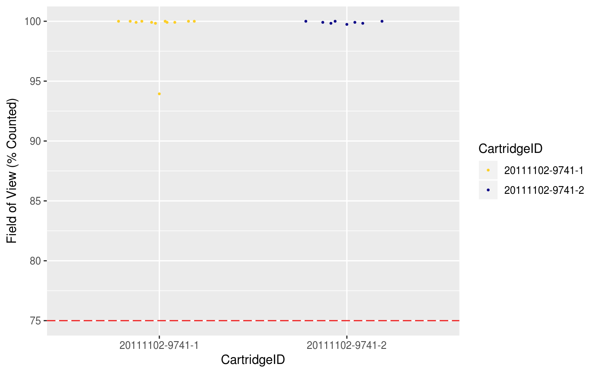#> #> #> #> ## Positive Control linearity #> #> Six synthetic DNA control targets are included with every nCounter Gene Expression assay. #> Their concentrations range linearly from `128 fM` to `0.125 fM`, and they are referred to as **POS_A** to **POS_F**, respectively. #> These **Positive Controls** are typically used to measure the efficiency of the hybridization reaction, and their step-wise concentrations also make them useful in checking the linearity performance of the assay. #> An R2 value is calculated from the regression between the known concentration of each of the **Positive Controls** and the resulting counts from them (this calculation is performed using log2-transformed values). #> #> #> Since the known concentrations of the **Positive Controls** increase in a linear fashion, the resulting counts should, as well. #> Therefore, R2 values should be higher than `0.95`. #> #> #> Note that because POS_F has a known concentration of `0.125 fM`, which is considered below the limit of detection of the system, it should be excluded from this calculation (although you will see that **POS_F** counts are significantly higher than the negative control counts in most cases).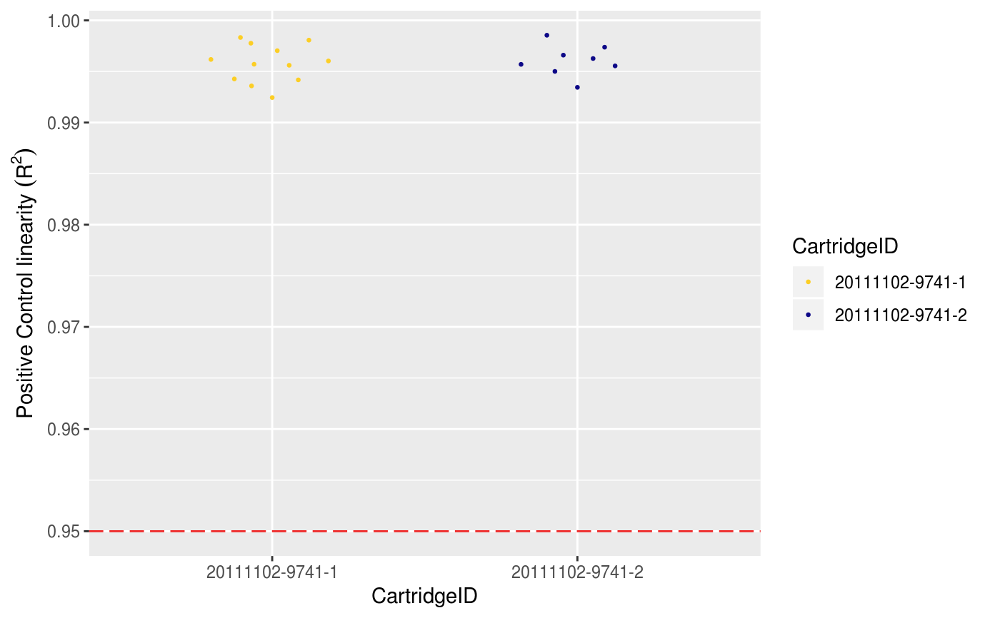#> #> #> #> ## Limit of Detection #> #> The limit of detection is determined by measuring the ability to detect **POS_E**, the `0.5 fM` positive control probe, which corresponds to about 10,000 copies of this target within each sample tube. #> On a **FLEX**/**MAX** system, the standard input of `100 ng` of total RNA will roughly correspond to about 10,000 cell equivalents (assuming one cell contains `10 pg` total RNA on average). #> An nCounter assay run on the **FLEX**/**MAX** system should thus conservatively be able to detect roughly one transcript copy per cell for each target (or 10,000 total transcript copies). #> In most assays, you will observe that even the **POS_F** probe (equivalent to 0.25 copies per cell) is detectable above background. #> #> #> To determine whether **POS_E** is detectable, it can be compared to the counts for the negative control probes. #> Every nCounter Gene Expression assay is manufactured with eight negative control probes that should not hybridize to any targets within the sample. #> Counts from these will approximate general non-specific binding of probes within the samples being run. #> The counts of **POS_E** should be higher than two times the standard deviation above the mean of the negative control.#> #> #> #> # Control Genes #> #> #> #> ## Positive #>#> #> #> #> ## Negative #>#> #> #> #> ## Housekeeping #>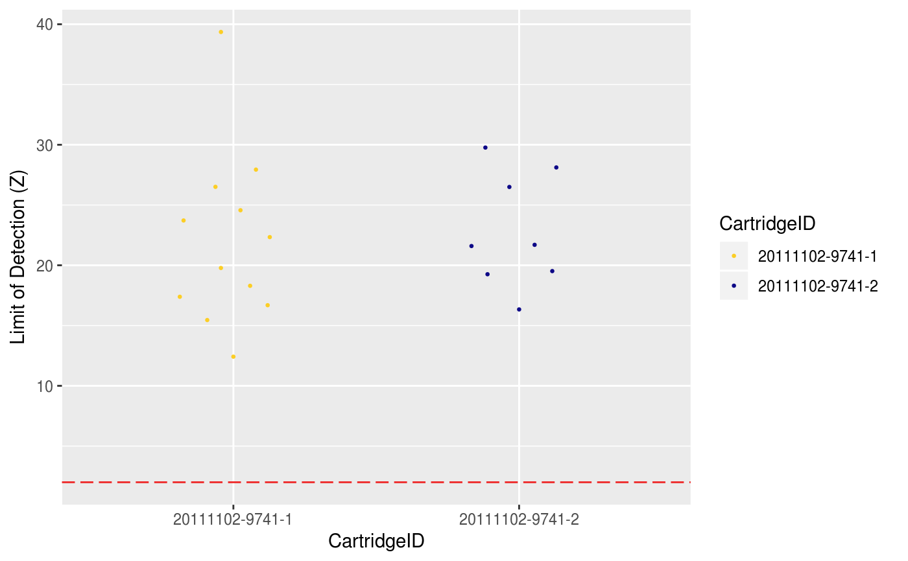#> #> #> #> ## Control Probe Expression #>#> Warning: Transformation introduced infinite values in continuous y-axis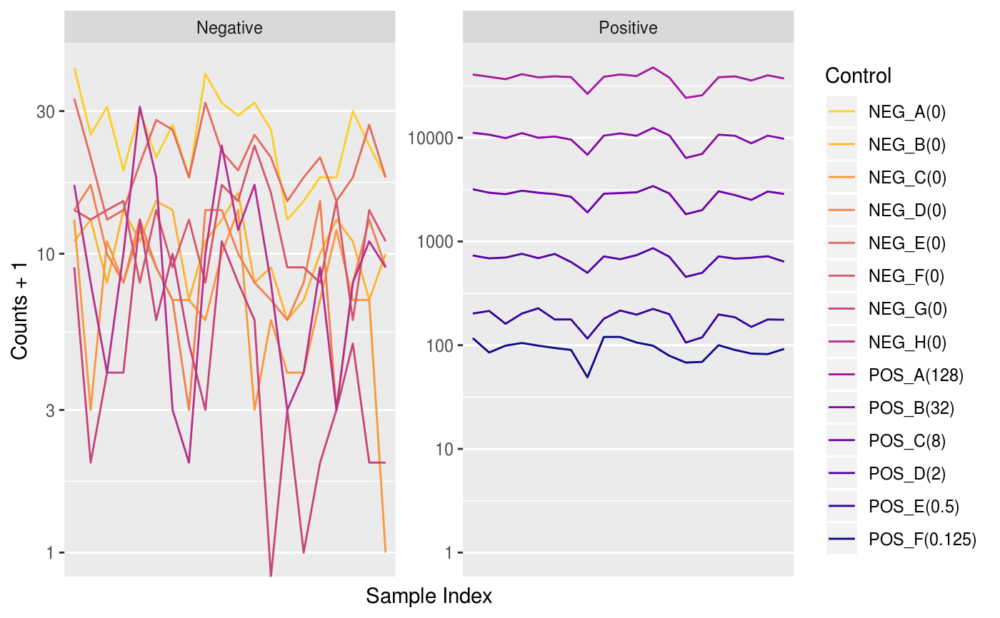#> #> #> #> # QC Visuals #> #> #> #> ## Average Count vs. Binding Density #>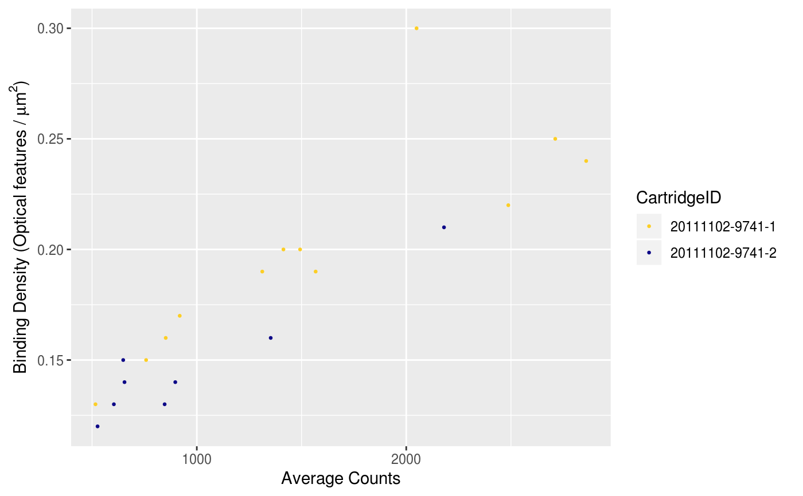#> #> #> #> ## Average Count vs. Median Count #>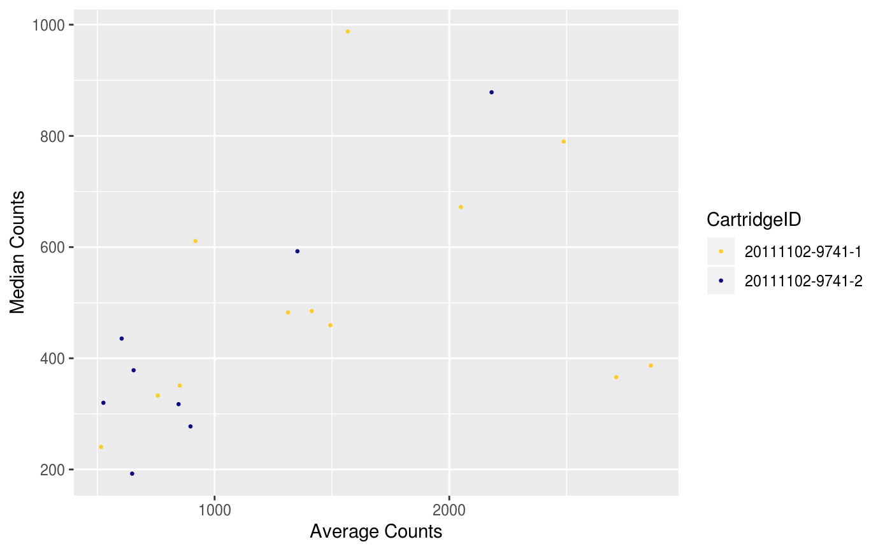#> #> #> #> ## Principal Component #> #> #> #> ### PC1 vs. PC2 #>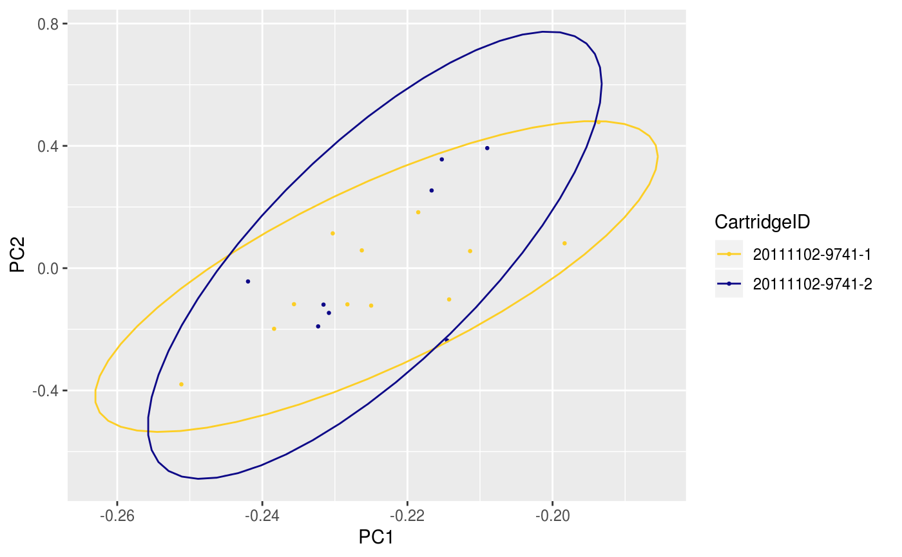#> #> #> #> ### Factorial planes #>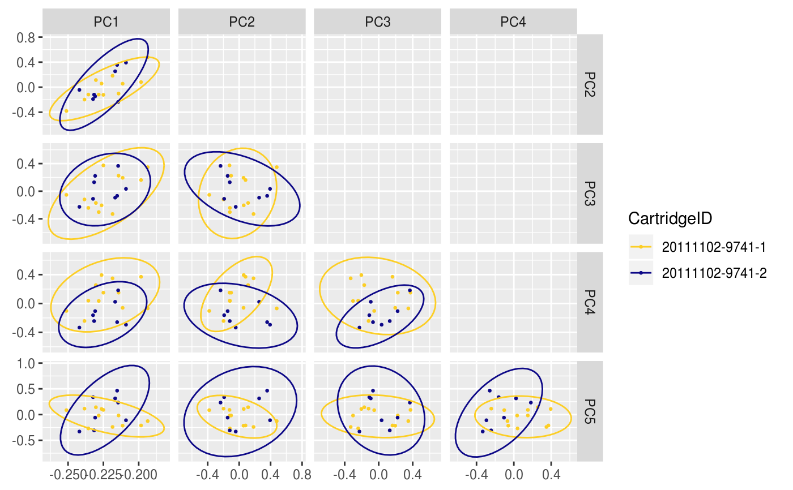#> #> #> #> ### Inertia #>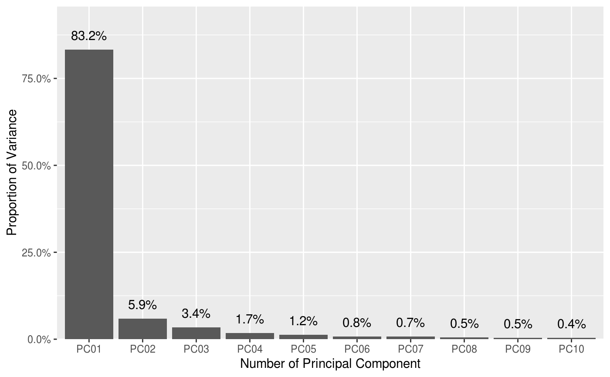#> #> #> #> # Normalisation Factors #> #> #> #> ## Positive Factor vs. Background Threshold #>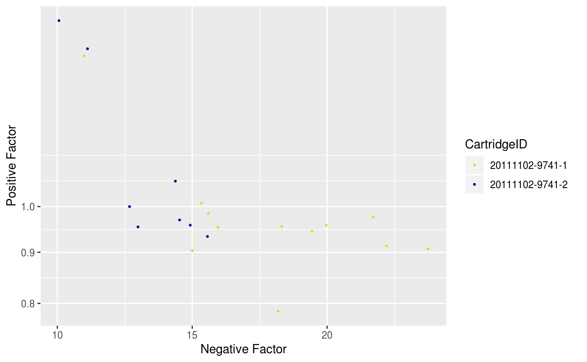#> #> #> #> ## Housekeeping Factor #>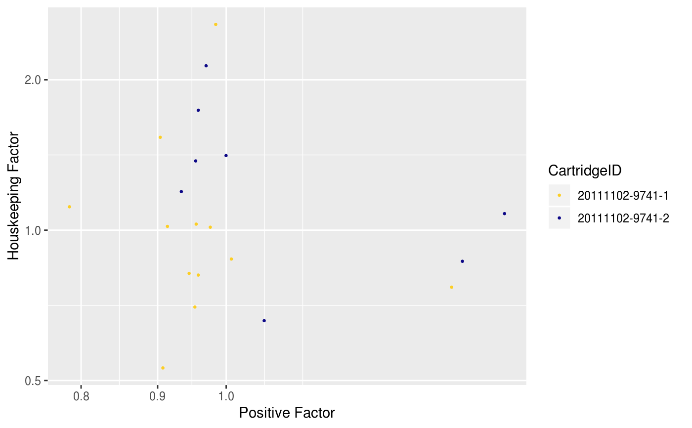#> #> #> #> ## Normalisation Result #>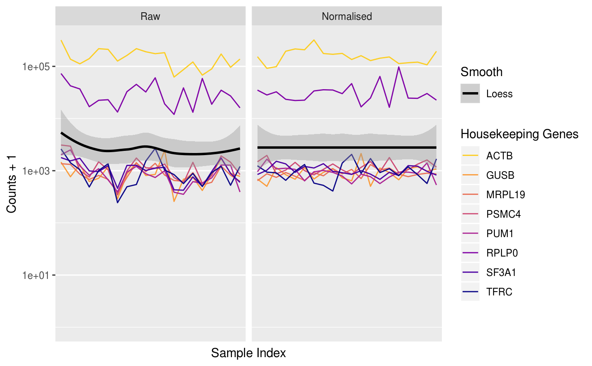#>